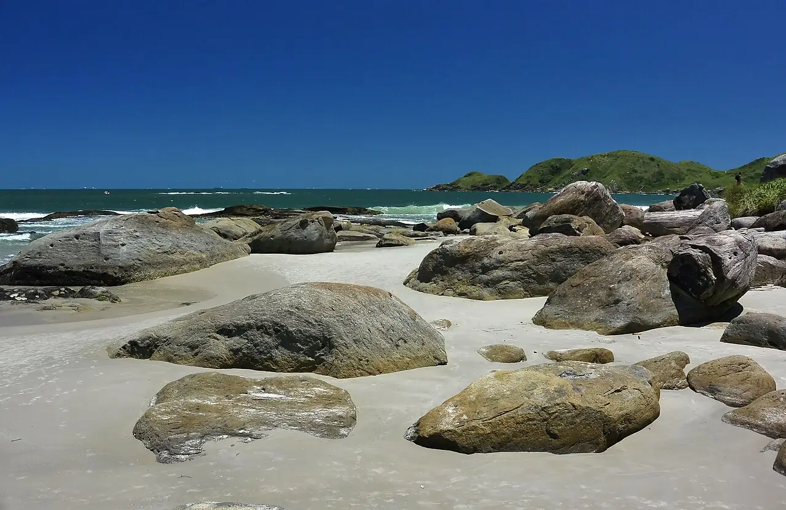

Praia Grande — Ilha do Mel
Paraná, Brésil · surf, baignade

Longue plage sauvage sur la façade océanique d’Ilha do Mel, une île protégée sans voitures où le nombre de visiteurs est limité chaque jour. C’est la plage la plus exposée à la houle de l’île, prisée des surfeurs.
- Lieu
- Paraná, Brésil
- Niveau
- Intermédiaire
- Activités
- surf, baignade
- Type d'eau
- Mer / océan
- Coordonnées
- -25.55, -48.30 (position approximative du secteur)
Dangers à connaître
- Courants d’arrachement quand la houle rentre.
- Rochers aux deux extrémités de la plage.
Le conseil d'Ocean Buddy
Accès en bateau depuis Pontal do Sul ou Paranaguá, puis à pied par les sentiers : voyage léger.
Ouvrir dans Ocean Buddy Télécharger sur l'App Store
Source : Fiche Ocean Buddy · septembre 2026 · à vérifier localement.